Total project budget tracked
Data and BI Analyst, London
I turn fragmented business data into reporting systems people can trust.
Data and BI Analyst with experience across Power BI, SQL, Python and Microsoft Fabric. I build reporting layers, dashboards and analytical views that help teams understand performance, risk and what needs attention next.
Featured Case Study
One Portfolio. Four Versions of the Truth.
Analytics Engineering · BI Development · Stakeholder Reporting
Four teams were working from disconnected reporting sources across cost, cashflow, project progress and scheduling. I built a unified Power BI reporting layer that standardised project identities, separated actuals from forecasts and turned fragmented files into one trusted view for project reviews.
Power BI
DAX
Data Modelling
ETL Pipeline
Stakeholder Analytics
Open full PDF
Capacity monitored across regions
Disconnected sources unified
Spreadsheets opened in meetings
Overview
Four teams were maintaining separate reporting files.
Cost, cashflow, project progress and scheduling data were all useful on their own. The problem was structure. Project names, codes, cost categories and monthly values did not line up cleanly. Weekly project meetings often started with teams reconciling numbers before discussing decisions.
The goal was not to force every team into one spreadsheet. The goal was to handle the reconciliation in the data model so stakeholders could start from one agreed view.
Problem
Nobody was wrong. Nobody agreed.
The same project appeared under different names across files. Cost categories used different reference codes. Monthly columns mixed confirmed actuals with forward forecasts. Leadership could not quickly tell which figures were facts, which were estimates and which file should be trusted.
Solution
I built the reporting layer before focusing on dashboard polish.
The value came from making the data model trustworthy before the visuals were built.
Standardised project identities
Resolved different project names, codes and regional labels into one consistent identity across the source files.
Separated actuals from forecasts
Used the reporting date as the boundary so the model knew whether a monthly value was confirmed spend or a future estimate.
Reshaped monthly data
Converted wide spreadsheet columns into long format so trend visuals, date filters and time calculations worked correctly.
Created resilient DAX measures
Built calculations that stayed reliable across project, region, campus, date and delivery stage filters.
Visual Highlights
The report answered four different business questions.
Commercial Exposure
Where does the €977M budget sit right now?
The waterfall made contingency movement visible. A final balance can look healthy while change requests are eating into it. Showing approved contingency, committed spend, risk weighted value and remaining balance made the movement easier to challenge.
- €312M committed
- €665M uncommitted
- €43M invoiced
- 4.4 percent invoiced at the reporting point
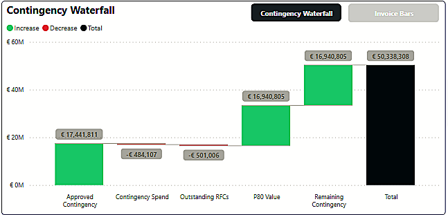
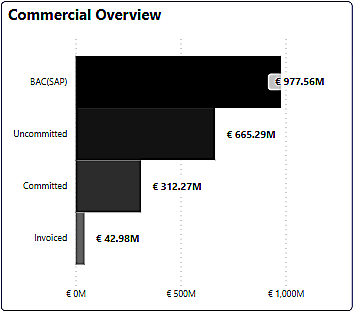
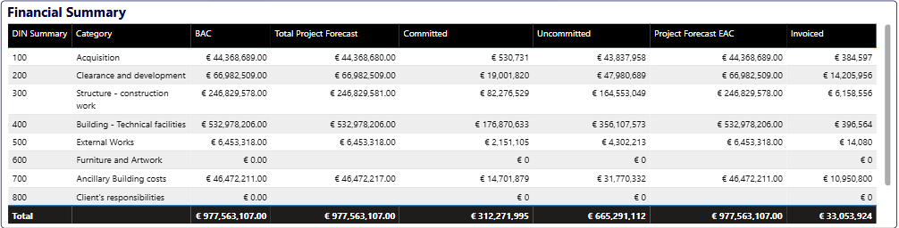
Cashflow Timing
Which values are facts and which are projections?
The cumulative cashflow curve uses a reporting date marker to separate confirmed actuals from forward projections. That line prevents future forecast values being read as confirmed spend.
The monthly matrix gives finance users the verification layer behind the curve, so each point can be traced back without opening the source files.
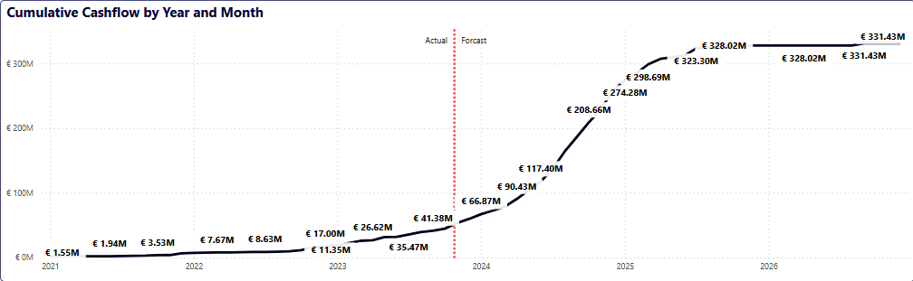
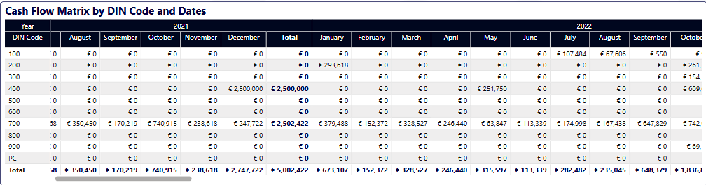
Capacity Concentration
Where is delivery risk concentrated?
The regional capacity view showed 12 active projects and 708MW total capacity. Frankfurt carried 476MW, which was 67 percent of delivery capacity. West Africa carried 148MW and Central East carried 84MW.
That changed the conversation from a project list to a concentration risk view.
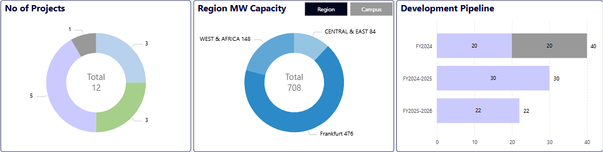
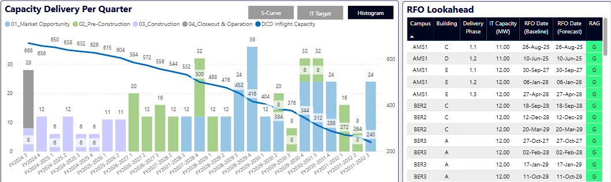
Schedule Performance
Hours logged are not the same as progress.
The schedule view showed plan versus actual hours, an SPI trend and task completion in one place. The SPI dropped to 24 percent before recovering to 86 percent, while the variance reached negative 7,017 hours.
The work package view exposed where the delay sat, so the project manager could walk into the review knowing which area needed attention.
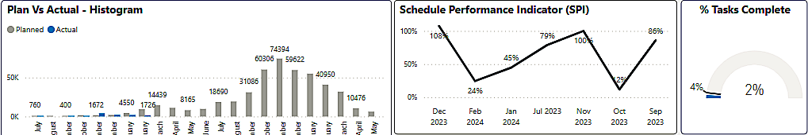
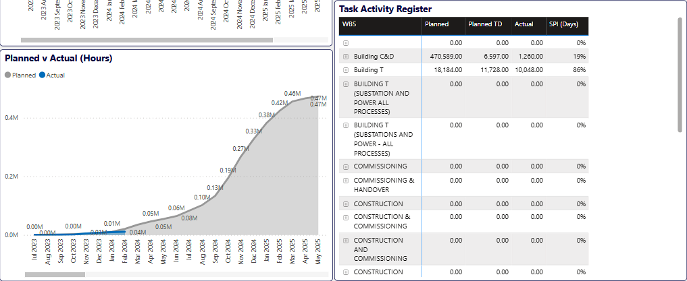
Outcome
The main outcome was removing repeated reconciliation from decision making.
Instead of opening several spreadsheets and debating which number was correct, stakeholders could start from one agreed view. Commercial teams could track where the €977M budget sat between committed, uncommitted and invoiced states. Finance could validate cashflow month by month. Leadership could monitor capacity and upcoming readiness milestones. Project managers could see which work packages were driving schedule variance before the review started.
MSc Project Highlight
Progress reports show what happened. I built what comes next.
My MSc project turned a construction progress workbook into a package level early warning system. The goal was to predict next reporting variance before the update arrived, so project teams could see risk earlier.
Predictive Analytics
From operational spreadsheet to forecasting pipeline.
The source file was built for manual monitoring, with planned and actual progress spread across date columns. I reshaped it into modelling data, engineered temporal features, trained models with chronological splits and produced package level predictions that could support earlier intervention.
Python
Pandas
Scikit learn
Feature Engineering
Ridge Regression
Open MSc PDF
R² on weekly test data
Mean absolute error
Feature families engineered
Outperformed all Random Forest variants
Reports were accurate, but reactive.
Traditional progress reporting showed which work packages were already behind. By then, the team was responding after the best window for early action had started to close.
Predict the next variance.
I reframed progress variance as a supervised learning target. Instead of calculating today’s gap, the model estimated where the next reporting update would land.
Build the pipeline first.
I converted wide progress sheets into long format, merged planned and actual values, built daily and weekly datasets, created lag, rolling, interval and time features, then compared models on future observations.
Simple model, strong signal.
Ridge Regression performed best because the engineered features captured the structure of the problem. It was accurate, explainable and more useful than a complex model that was harder to trust.
Data Journey
The workbook was not model ready.
Dates were spread across columns and planned and actual progress lived in separate sheets. The first real task was reshaping the reporting file into data a forecasting model could use.
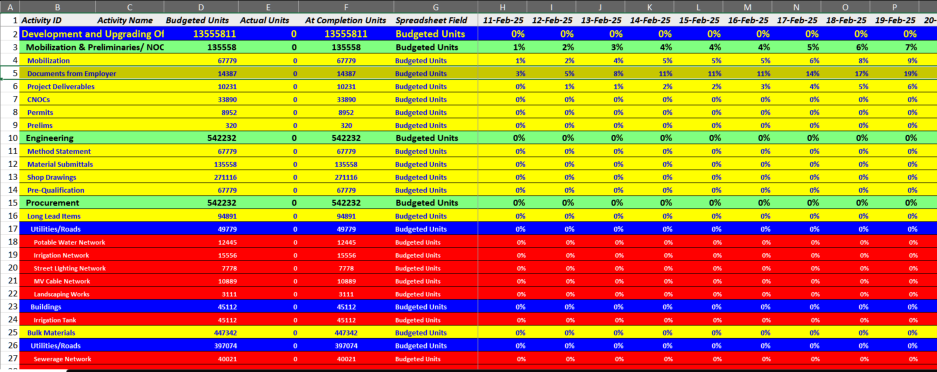

Signal
The gap was visible over time.
The planned and actual curves diverged, which made the forecasting task meaningful. Lagged variance became the strongest signal because packages drifting from plan tended to carry that behaviour forward.

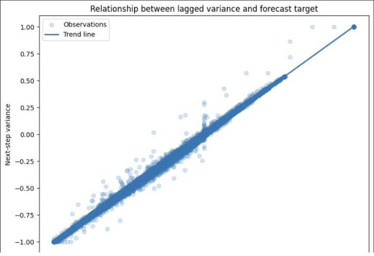
Model Results
Ridge beat every Random Forest variant.
I tested Random Forest across simple, default and deeper configurations. The best Random Forest reached R² of 0.970, while weekly Ridge reached 0.994 with lower error. That made Ridge the stronger choice on accuracy and trust.
The comparison also explained why. Ridge spread weight across related progress signals, while Random Forest concentrated importance heavily on rolling variance. For this dataset, the regularised linear model used the engineered structure more effectively.

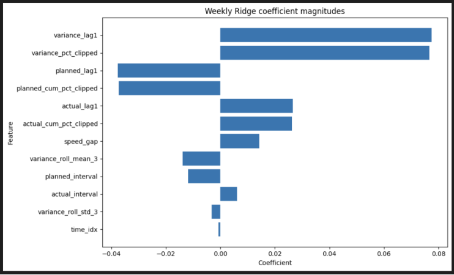

Output
The forecast landed at the work package level.
The pipeline produced predictions where project teams manage the work, not just at an aggregate level. That matters because early warning only becomes useful when someone can see which package needs attention.

Sample Output
Package level prediction check
Date
Actual
Ridge
Error
Dec 23
-0.2566
-0.2530
0.0036
Jan 06
-0.2687
-0.2672
0.0015
Feb 10
-0.3021
-0.3019
0.0002
The model output is close enough to flag package movement before the next review, without asking a recruiter to zoom into a dense table.
Technical Toolkit
The tools I use to make reporting reliable.
BI and reporting
Power BI, DAX, KPI design, executive reporting, dashboard navigation and stakeholder views.
Data modelling
Dimensional modelling, long format reshaping, date tables, semantic layers and validation logic.
Engineering
SQL, Python, ETL logic, Microsoft Fabric, Lakehouse, Data Factory and SharePoint connected data.
Delivery
Requirements gathering, report handover, stakeholder review, data quality checks and clear documentation.
About
I care about the structure behind the dashboard.
I started in data through computer science, where data warehousing, dimensional models and reporting layers made the link between structure and decision making clear.
Since then I have worked as a BI Developer at GagaMuller Group, building reporting solutions for client environments across project controls, finance, programme delivery and operational reporting.
The part I enjoy most is making data usable for people who do not want to debug it. A good report should give confidence, show where the number came from and make the next question easier to ask.
Experience
BI delivery across real client environments.
Business Intelligence Developer
Built Power BI reporting, data models, Python processing flows and Microsoft Fabric reporting layers for client teams across the UK and Ireland.
MSc Data Science and Analytics
Current postgraduate study focused on applied analytics, predictive modelling and machine learning.
Contact
Open to Data Analyst, BI Analyst and Power BI roles.
Based in London with full right to work in the UK. I am interested in teams that need reliable reporting layers, clear dashboards and practical analytics that help people make better decisions.